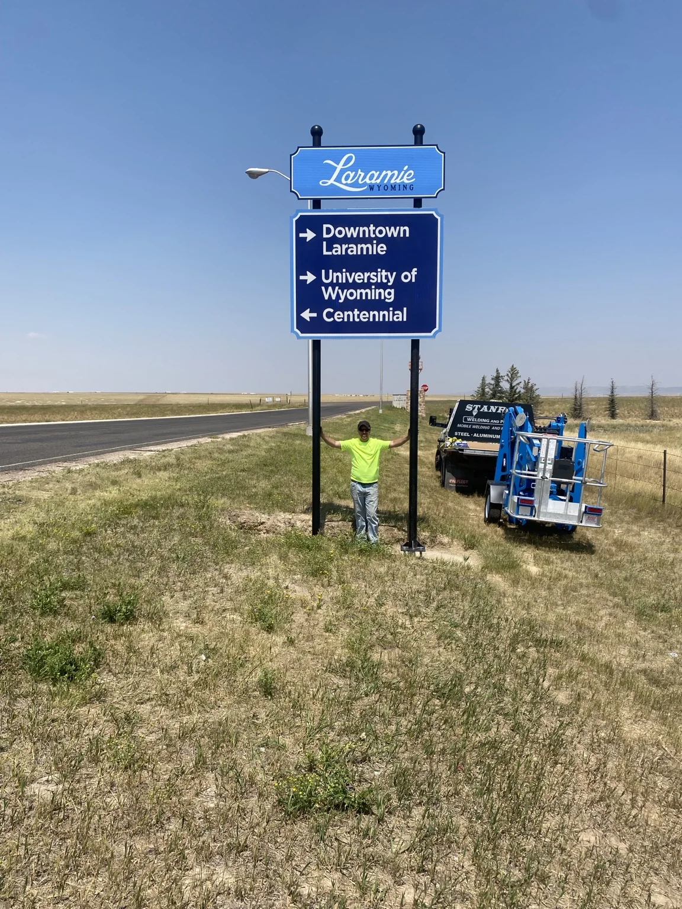
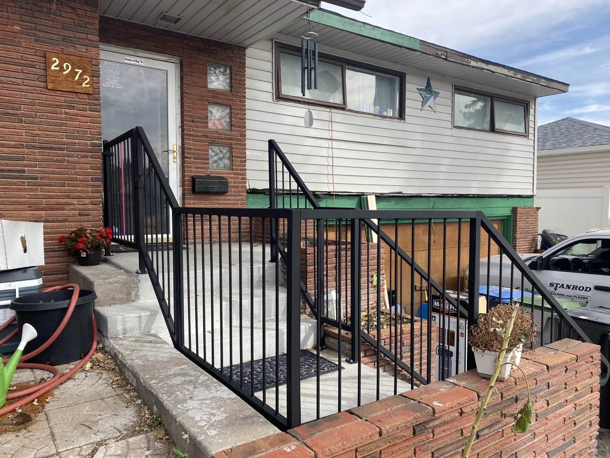
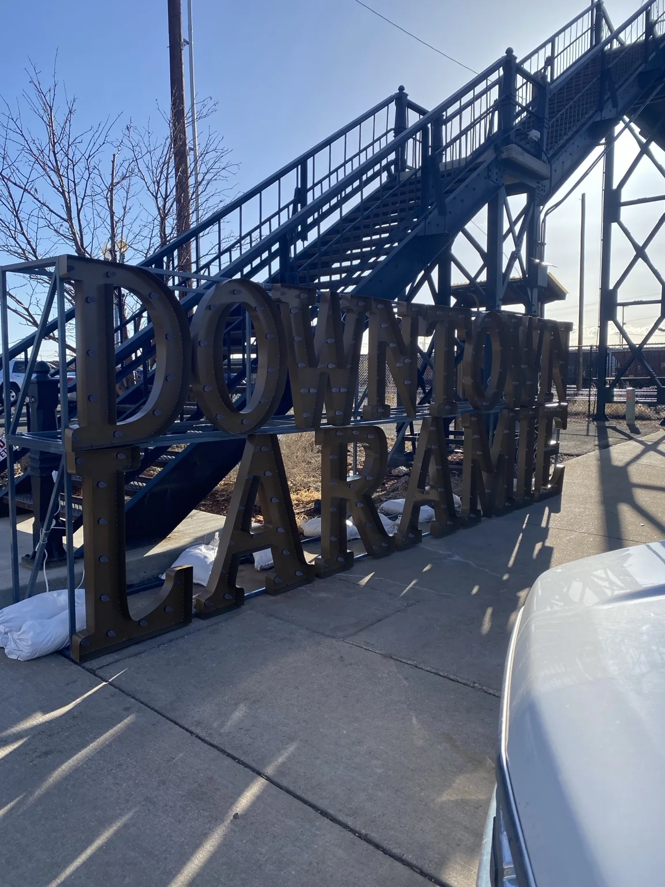
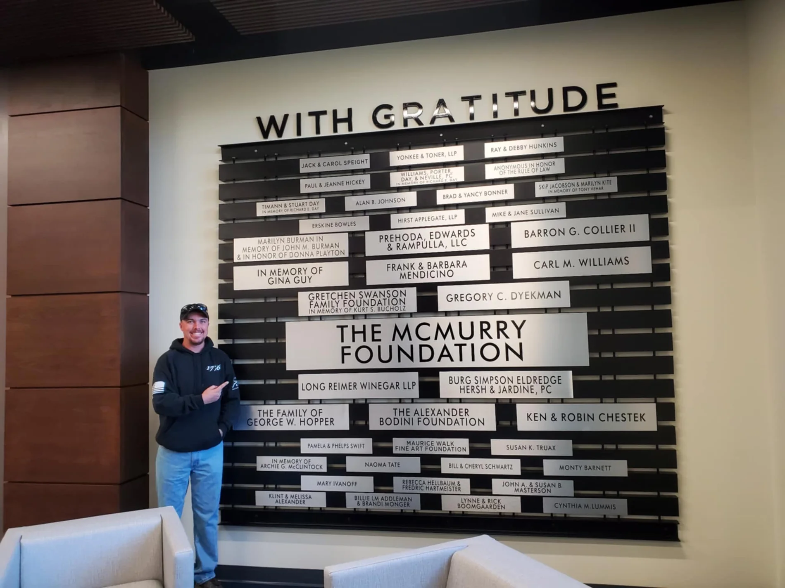
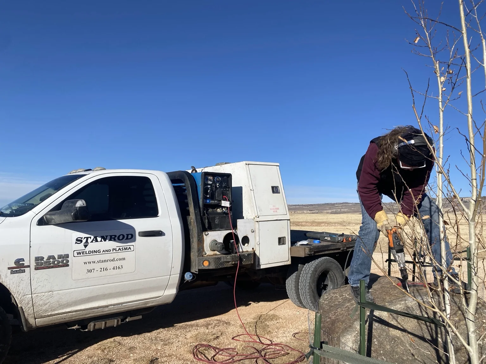
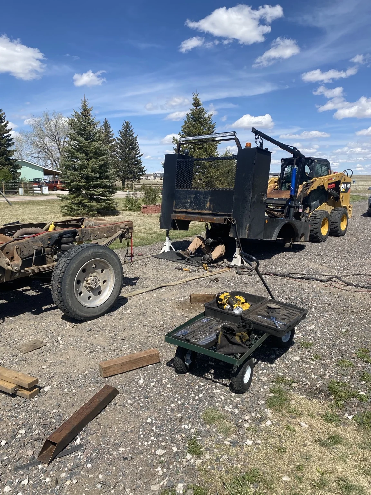

Contractor and commercial work
Stanrod installed 40 wayfinding signs for the City of Laramie. This one near the regional airport directs visitors toward Laramie or Centennial.
From inspection corrections and field repairs to custom homeowner work and commercial fabrication, Stanrod focuses on useful solutions built around the job in front of you.
These are real Stanrod projects from the shop and field, with the actual stories behind them.

Stanrod installed 40 wayfinding signs for the City of Laramie. This one near the regional airport directs visitors toward Laramie or Centennial.

This custom Cheyenne handrail used 1½-inch square tube and ½-inch round pickets — the same basic materials and design language used in FabChallenge.

A logging machine two hours south of Laramie had sheared off several brackets. The replacement pieces had to be figured out and built on site.
The Downtown Laramie sign by the historic footbridge was built in a traditional marquee style with a Western font and finished in powder coat for durability. It remains on site today.

The main donor-recognition wall at the University of Wyoming College of Law was built entirely from aluminum and still weighed more than 500 pounds. Adam had four days to turn the final rendering into reality, including traveling out of state for material.

Four steel platforms were ordered for water-treatment equipment in the basement of a Cheyenne church. Each was designed for 1,000-pound loads with fully adjustable legs to fit the installation.

Stanrod has shipped traditional plasma-cut signs worldwide and powder coats them in the shop in the customer's chosen color. The Lake House sign shown here was finished in Federal Standard Satin Black.

Stanrod also works alongside other welders and artists. On this project, the mobile rig provided power and welding capability while Black Row Productions mounted a custom address sign into a large boulder.

This job involved custom fitting a service bed onto a stock truck. Heavy equipment, the CNC plasma table, and the mobile welding rig all helped make the fit-up faster and more practical.

Send photos, dimensions, a sketch, the failed part, or the inspection concern. We can start there.